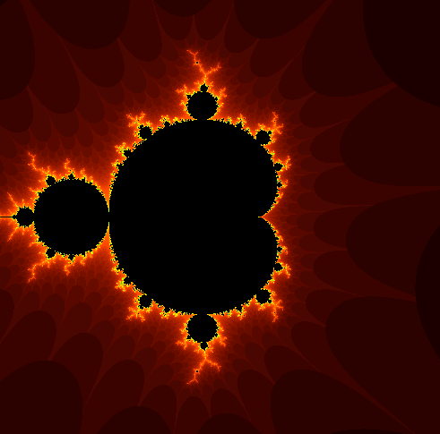
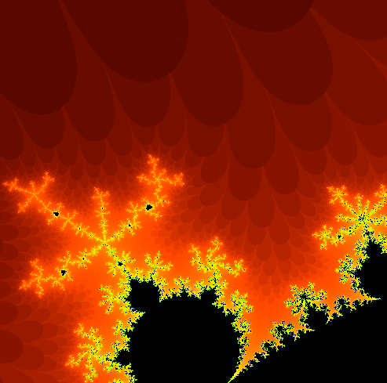
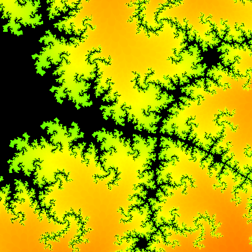

Maksymilian SzejkoI am currently completing my first year of Computer Science degree at City. Proir to the start of my course I have had experience in Python when doing my GCSE's and A Level's. In my spare time I enjoy playing video games. |
||
|
|
||
Bootcamp 2020: Forest sceneMy first programming project, concluding the 2 week Programming Bootcamp at City (2020). This processing project uses the the understanding of iteration and selection, as well as, some maths compenents such as imaginary numbers, complex numbers, diverging and converging numbers. By iterating the equation f(z)=z^2+c and colouring a pixel based on whether the result tends to infinity I created a nice looking fractal. I also created a zoom feature so you can look at the patterns that get smaller and smaller in an interactive way using the mouse. Check out the code on Github: https://github.com/MaksymilianSze/adbt182 | ||
|    | ||